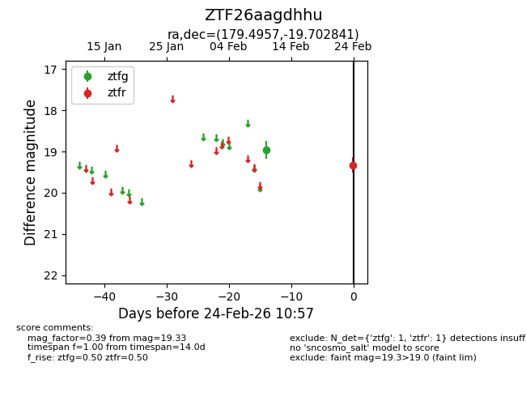
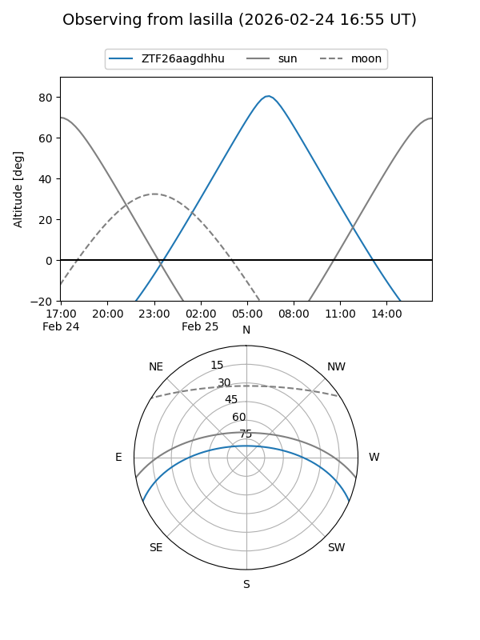
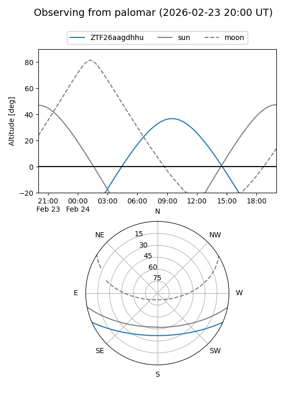

ZTF26aagdhhu
Target ZTF26aagdhhu at 2026-02-24 10:58
Aliases and brokers:
FINK: link
Lasair: link
ALeRCE: link
alt names
ZTF26aagdhhu (ztf,fink_ztf)
Coordinates:
equatorial (ra, dec) = 179.4957,-19.70284
equatorial (HMS+DMS) = 11:57:58.97,-19:42:10.23
galactic (l, b) = (286.0654,+41.41158)
Flags:
Photometry:
last ztfg=18.96, ztfr=19.33
1 ztfg, 1 ztfr detections
Lightcurve

Visibility


Additional plots